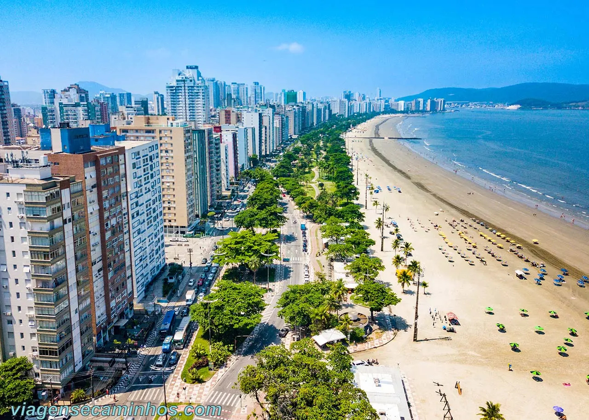

Santástico!! Tô sem idéias pra esses subtítulos, ok? Me deixa em paz.
Santos, é a casa do maior jardim frontal de praia do mundo!
Extendendo 7 quilômetros e acompanhando 6 praias. O jardim tem 77 espécies de flores e mais de 1700 árvores, entre a Praia do José Menino e a Ponta da Praia, onde tem a entrada e saída de navios.

As águas são tranquilas e a areia é macia. Parece relaxante.